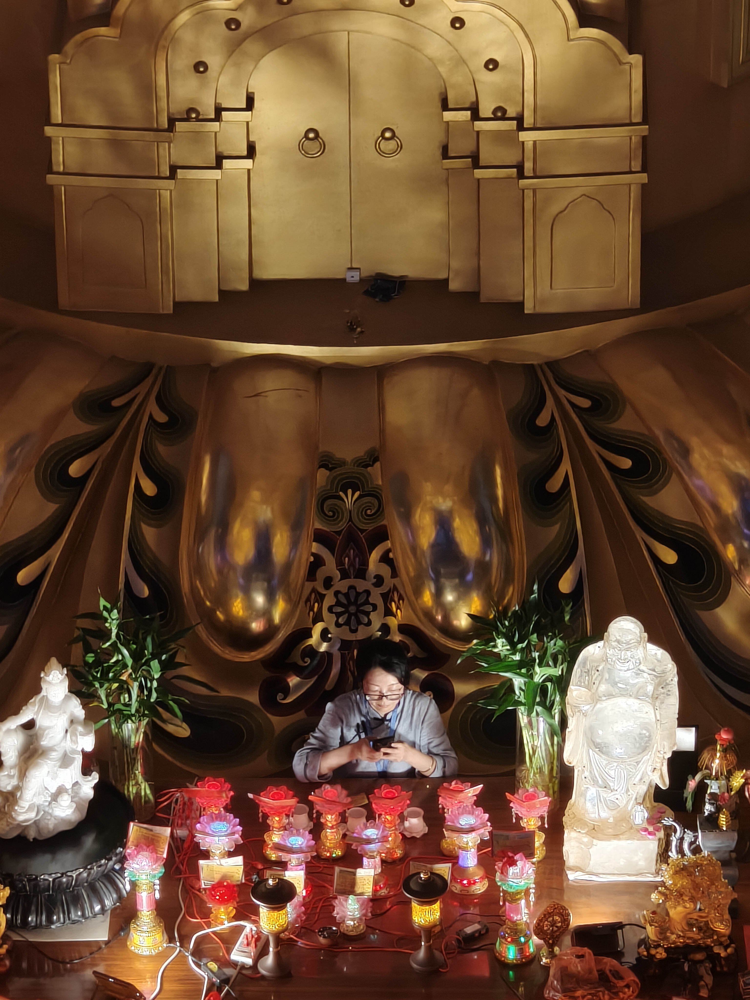

杂谈
断更好久（虽然也没人看就是了），这几个月在干什么嘞？🤔
上一篇文章还是3月份看完沙丘2写的了，后面备考也没什么心思写东西吧。
那么我在干啥呢
总之就是莫名其妙过了两三个月然后考了乱考一通，考完接着去杭州搞三一，当然最后复交浙全都被刷了就是了。
复交笔试是一点过不了，复的还能让我有动笔的机会，交的，额，写了两题就开摆了，坐在那儿画了半天便便，睡了会儿觉，好不容易终于等到提前半小时交卷，成为第一个走出考场的人捏。🤓
浙大没有笔试，准备了半天的面试最后综合成绩89点多，比去年录取分高一点点，结果排名27，直接out。
最后的结果呢就是上了一个 顶流大专 末流酒吧舞，早自习早操晚自习是一个不落的，搁着上高四呢。
暑假么也没干什么，毕业以后和工程队的xdm出来聚了聚（xdm虽然是各奔东西了，怎么说呢，海内存知己天涯若比邻吧），然后宅家练车，8月出去旅了下游。
暑假的旅游唯一给我非常深刻印象的只有那个绍兴的兜率天宫。
 |
|
|---|---|
| 在远处看 | 在门口往上看 |
非常非常大，从最后几阶台阶上来时抬头透过石栏杆看到相当震撼。
这里有个视频，有流量可以看下（11.7MB）。
里面的佛像也是巨大无比：
|  |  |
 |
|---|---|---|
| 佛脚下的人 | 佛脚 | 大佛全身 |
然后嘞🤔
然后去了点其他地方，然后就去学校了。
且说这城市，忽阴忽雨，一个月两天晴天，不知道以为我在大嘤。
再说这学校，早自习早操晚自习一个不落下，看似上大鞋，实则准备冲击高考；弯曲而狭窄的道路，搭配反坦减速带，阿米来了都得颠他两颠；少之可怜的充电桩，莫名其妙建一堆不知道给谁用的停车场（现在还在建。。），时常起火的电瓶车，经常发生的交通事故。
简直无敌！
开学以后还和在一个城市的好哥们儿们聚了聚，还是很幸运有人能一起出来的。
开学以后也是看了好几部电影吧，《佐杜洛夫斯基的沙丘》《楚门的世界》《十诫》《白日梦想家》《盗梦空间》《哈利波特》《回到未来》，都是经典了。
除了打游戏看电影之类的，花了小四百买了一堆工具和几辆风火轮玩车模改装，还是很有意思的。
不过
大鞋确实不同高中，一天天感觉什么也没干但还是非常疲惫，好像没有方向和目标，不知道何去何从。
报名了科协和机器人队的比赛也只是强迫自己，实际上是处处被人带着走。
学来学去感觉也学不进去什么东西，感觉有点空虚和迷茫。
不过II
出现了一个人。
🤔🤔🤔，
😳😳😳，
🥰🥰🥰。
（ta主动的🤓）
悄悄在这个无人问津的博客里说一句，
和ni在一起真的很开心！！😘
额，